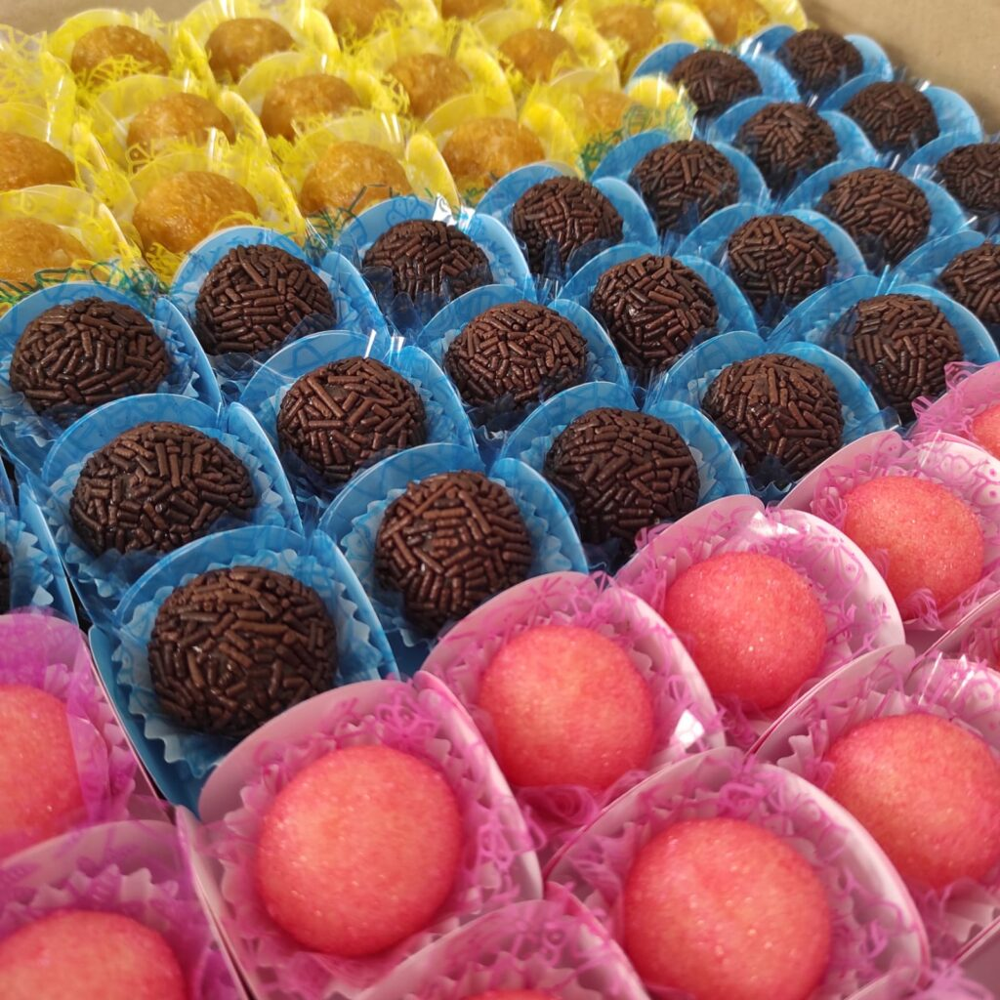
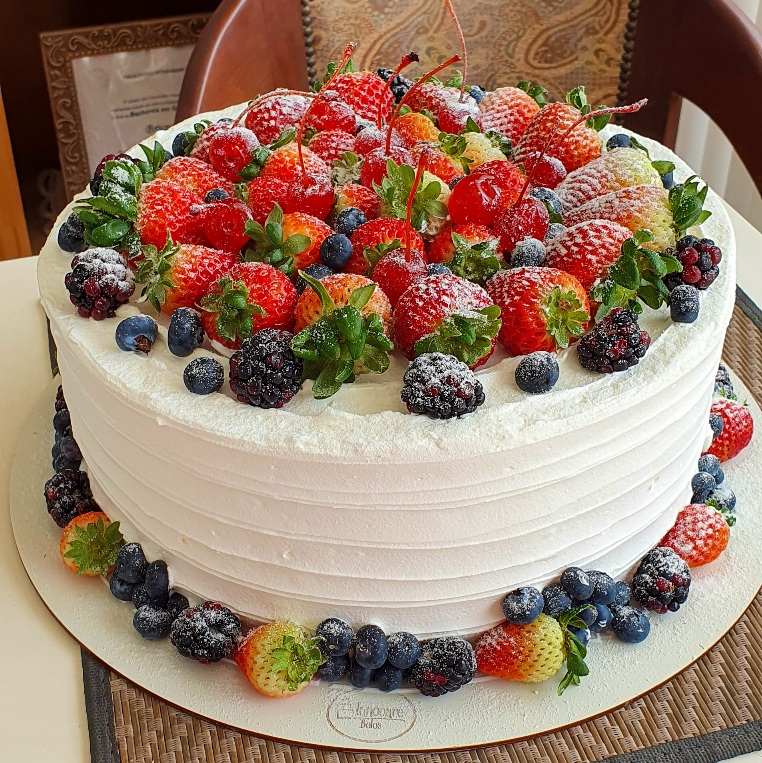

A Camis Doces é o destino perfeito para quem ama se deliciar com doces artesanais de alta qualidade. Nosso site oferece uma variedade incrível de guloseimas, desde brigadeiros até bolos personalizados, todos preparados com ingredientes selecionados e muito carinho. Seja para uma comemoração especial ou simplesmente para satisfazer aquele desejo por algo doce, na Camis Doces você encontra opções irresistíveis que agradam a todos os paladares. Navegue pelo nosso catálogo e descubra o sabor da felicidade em cada mordida!
Oferecemos delícias irresistíveis que transformam qualquer momento em uma experiência especial. Entre os nossos mais vendidos, destacam-se os brigadeiros artesanais, feitos com chocolate de alta qualidade, se você busca algo mais leve, nossas balas de coco são uma explosão de frescor e doçura na boca. Venha experimentar e descubra por que nossos doces são os favoritos de tantos clientes satisfeitos!
Temos também bombons de morango e casadinhos são verdadeiras joias da confeitaria, feitos com ingredientes selecionados para oferecer o melhor sabor. O bombom de morango é um deleite suculento, com morango fresco envolto em uma camada generosa de chocolate, criando uma combinação perfeita de doçura e frescor. Já o casadinho, com seu contraste entre o brigadeiro e o beijinho, é uma explosão de sabores clássicos que nunca sai de moda.
Que tal promover esses dois clássicos,o Beijinho derrete na boca com seu toque de coco e leite condensado. Já o Cajuzinho, com seu sabor de amendoim e uma pitada de chocolate, é a combinação perfeita de tradição e doçura.
A qualidade dos bolos é garantida pelo uso de ingredientes frescos e receitas bem testadas, que resultam em sabores autênticos e texturas perfeitas. Oferecemos uma variedade de opções, desde bolos tradicionais até personalizados, A atenção aos detalhes, tanto no preparo quanto na decoração, assegura que cada bolo seja uma obra-prima, enquanto o feedback dos clientes e a inovação contínua nos permitem manter a oferta sempre atraente e alinhada às preferências do público.
O bolo de Floresta Negra e frutas vermelhas combina o clássico bolo de chocolate com camadas de chantilly e uma mistura de frutas vermelhas, como morangos, framboesas e mirtilos, substituindo as tradicionais cerejas. Essa variação oferece um equilíbrio perfeito entre o doce e o ácido, criando um sabor complexo e uma apresentação visualmente atraente, venha aproveitar essas delicias.